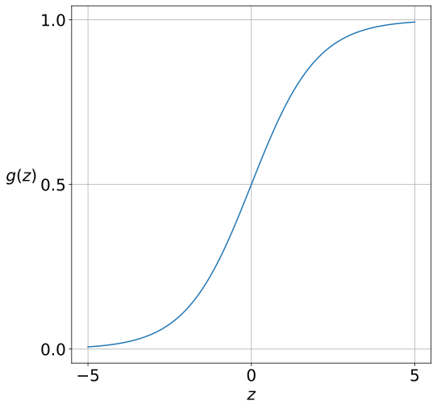

Model¶
A neural network has three components:
- layers
- weights
- activation functions
Each layer is a collection of nodes, also called neurons. Layers are stacked one after the other. Neurons in successive layers are connected to each other by means of an edge. Edges have weights to denote the importance of the connections. The number of layers and their sizes determine the shape of the weights. Activation functions are independent of the layers and weights. With these three components, we can define the model equations that compute the output given the input. In the case of neural networks, this is called a forward pass and will be discussed in the next section.
Layers¶
All networks have at least three layers:
- input
- hidden
- output
The number of hidden layers is a hyperparameter. For the rest of the document, we will follow a convention to denote the layers. The model has \(L + 1\) layers. Layers are indexed using \(l\).
- \(l = 0\): input layer
- \(1 \leq l \leq L - 1\): hidden layers
- \(l = L\): output layer
- \(S_l\): number of neurons in layer \(l\)
\(S_0 = m\), the number of features for the problem. \(S_L\) can take the following values:
- \(1\), for a regression problem
- \(k\), for a multi-class classification problem
Weights and biases¶
The weight matrix connecting layer \(l - 1\) and \(l\) is as follows:
- \(\boldsymbol{W_l}\): weight matrix
- size: \(S_{l - 1} \times S_{l}\)
- \(W_{lij}\): weight connecting \(i^{th}\) neuron in layer \((l - 1)\) to \(j^{th}\) neuron in layer \(l\)
- \(\boldsymbol{b_l}\): bias vector
- size: \(S_l\)
- \(b_{lj}\): bias of the \(j^{th}\) neuron in layer \(l\)
There are no weights before the input layer. Weights start from the first hidden layer, \(l = 1\). The last weight matrix is the one connecting the final hidden layer and the output layer, \(l = L\). Therefore, there are \(L\) learnable weights and biases, namely for \(1 \leq l \leq L\).
Activation functions¶
The type of the activation function depends on the layer in which it is used:
- hidden layers
- output layer
Hidden layers¶
\(g(z)\) will be used to refer to activation function. \(z\) is some real number.
Sigmoid¶

Tanh¶
ReLU¶
The full form of ReLU is Rectified Linear Unit:
When the argument to \(g\) is a vector or a matrix, the activation function will be applied element-wise.
Output layer¶
The activation function at the output layer depends on the type of problem being solved: regression or classification, and could be one of the following:
- Linear: \(g(z) = z\)
Here, \(z\) is a scalar activation at the output, that is, there is exactly one neuron in the output layer. This is used for regression problems.
- Softmax: \(g(\boldsymbol{z}) = \begin{bmatrix} \cdots & \cfrac{e^{z_i}}{\sum \limits_{r = 1}^{k} e^{z_r}} & \cdots\end{bmatrix}^T\)
Here, \(\boldsymbol{z}\) is a vector of activations at the output layer, that is, there are \(k\) neurons in the output layer. This is used in multiclass classification problems. If the argument is a matrix, then the softmax will be applied row-wise.
Network Architecture¶
A network architecture is a specification of the number of layers, the number of neurons in each layer, and the activation functions used at these layers. A sample is shown below:
| Layer index (\(l\)) | Type | Neurons | Activation function |
|---|---|---|---|
| \(0\) | Input | \(20\) | NA |
| \(1\) | Hidden | \(30\) | ReLU |
| \(2\) | Output | \(10\) | Softmax |
This is an architecture for a multiclass classification network with \(10\) classes. There is exactly one hidden layer. The number of parameters of this network can be computed as follows:
| Layer index (\(l\)) | Number of weights | Number of biases | Number of parameters |
|---|---|---|---|
| \(0\) | \(0\) | \(0\) | \(0\) |
| \(1\) | \(20 \times 30 = 600\) | \(30\) | \(630\) |
| \(2\) | \(30 \times 10 = 300\) | \(10\) | \(310\) |
| Total | \(940\) |
Notice how a simple neural network with just one hidden layer has nearly \(1000\) parameters! Neural networks with a large number of hidden layers are thus prone to overfitting.